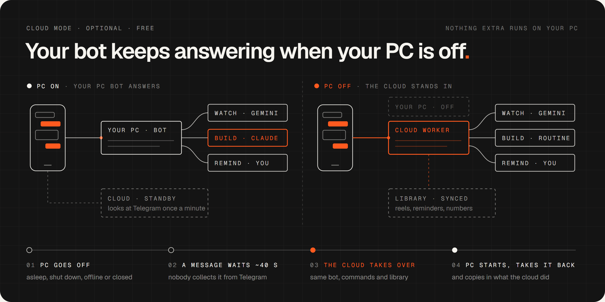
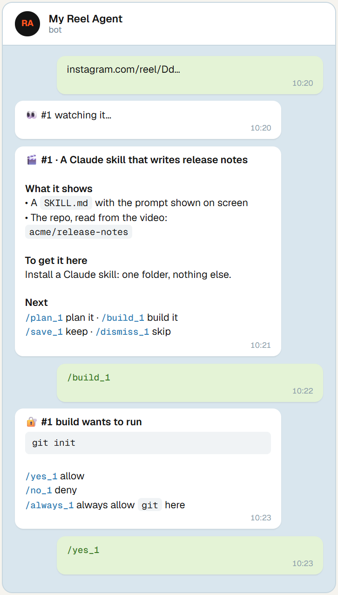

From "that looks useful" to running on your PC.
One bot on your own Windows PC. Every reel gets a number and its own worker, so you can keep scrolling and sending.
Send
An Instagram reel, a TikTok, a YouTube link, a video file or screenshots. Straight from the share sheet.
Understand
Gemini watches the whole video with sound and replies with the tools, repos, links and commands it shows. No key? A local watcher takes over.
Build
/plan 4, then /build 4 sonnet. It builds in its own git repo, and every shell command waits for your /yes.
A research assistant and a builder in one chat.
Everything runs through commands you can tap. Plain words work too: "build 4 with opus".
Honest breakdowns
What the video actually shows, not what the caption claims. /deeper 4 checks if it's real, what it costs and what's better.
Pick your model
Haiku, Sonnet, Opus, Fable or Codex, per task or per build. /quota shows what's left.
Undo anything
Each build is a git repo: /diff 4 to review, /undo 4 to roll back, /deploy 4 only when you say so.
A searchable library
Every tool you scrolled past, numbered and tagged. /find, /saved, a Sunday digest.
Reminders that fire
/remind tomorrow 9:00 … is booked in Task Scheduler and pings your phone, with nothing polling.
Works with the PC off
An optional, free Cloudflare Worker takes over the same bot in a minute or two, and hands it back when the PC starts.

It never obeys a reel.
Videos from strangers are data, not instructions. You stay in charge of everything that touches your PC.
- No command without your yes. There's deliberately no unattended mode.
- Reel content is untrusted. Captions, transcripts and Gemini's notes are never followed.
- Only your account. The bot answers the one Telegram account you pair.
- Builds stay in their folder. Writing anywhere else asks first.
- Your keys stay yours. The bot itself is blocked from reading them.

Up and running on Windows.
You need Windows 10 or 11, a Claude Pro or Max plan and Telegram. The setup guide (PDF) has a screenshot for every step.
# 1. Basics (skip what you have), then open a new PowerShell window winget install Python.Python.3.13 OpenJS.NodeJS.LTS Git.Git irm https://claude.ai/install.ps1 | iex # 2. Get the code git clone https://github.com/HNF-FRN/Reel-watcher-telegram-Agent.git reel-agent cd reel-agent # 3. Guided setup: asks before each change .\setup # 4. Start the bot, then message it from your phone .\bot start
On macOS or Linux, or just want Claude Code to watch videos? Install the watcher as a plugin:
/plugin marketplace add HNF-FRN/Reel-watcher-telegram-Agent /plugin install reel-watch@reel-agent
Questions people ask.
Is it free?
The code is free and MIT-licensed. Watching uses Gemini's free tier and cloud mode fits Cloudflare's free plan. Planning and building run through Claude Code, so they need a Claude Pro or Max plan (Codex builds use your OpenAI account).
Does it work on Mac or Linux?
The video watcher does, as a Claude Code plugin: /plugin marketplace add HNF-FRN/Reel-watcher-telegram-Agent, then /plugin install reel-watch@reel-agent. The full Telegram bot is Windows-only for now; the parts to port are in issue #13.
Can a malicious reel take over my PC?
Reel content is treated as information only and is marked untrusted when passed to a build. No shell command runs without your /yes, and builds can't write outside their folder without asking.
Do I need a Gemini key?
No. Without one, a local watcher samples frames and transcribes the audio with Whisper. With a free key, Gemini watches the whole video with sound, which gives much better breakdowns.
What happens when my PC is off?
With the optional cloud stand-in, a Cloudflare Worker takes over the same bot after about 40 seconds of silence, answers from the cloud, and hands everything back when your PC starts. Nothing extra runs on the PC.
Stop saving reels you'll never set up.
Free, open source, and yours to change. A star helps other people find it.